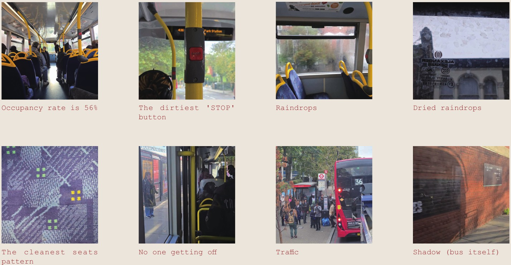
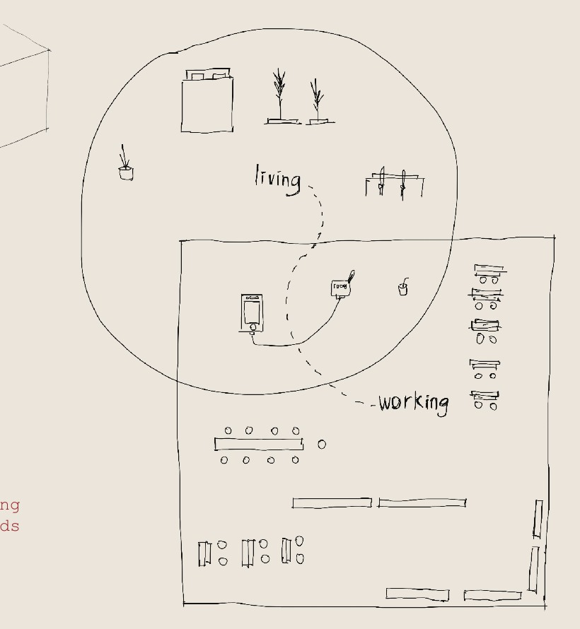
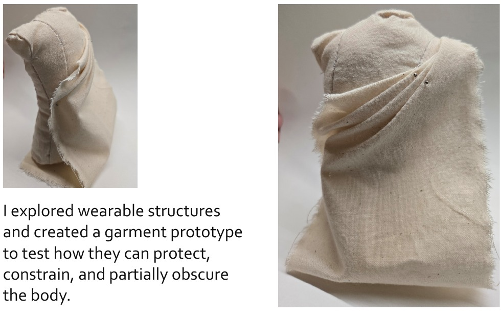

FROM EVERYDAY PERCEPTION TO QUESTIONS OF INFLUENCE
Why look again
at Rye Lane?
Beginning with my own journey
In Unit 1, the project began with my experience of commuting: waiting, rushing and travelling along a repeated route. I started recording small details such as raindrops on a window, the stop button, seat patterns and moving shadows. Paying attention to these moments gave me a way to reconsider a journey that had felt uneventful.


Sketching the relationship between home, school and the bus journey helped me move from thinking about time as a personal feeling to considering how it was experienced through different spaces. This interest later extended to routes, entrances and the brief encounters that happen while moving through the city.


In Unit 2, shop windows became a more focused setting for this enquiry. My study plan described them as everyday community interfaces, where signs, products, reflections and notices could offer clues to local life.
From the body to the street
In Unit 2, I experimented with a wearable structure around protection, restriction and the field of view. The limitation became clear: it depended on someone choosing to wear and use it. I was more interested in the encounters already taking place during an ordinary journey, which led me back to shopfronts as interfaces people meet without taking part in a separate activity.


Rye Lane became the main site because these layers sit close together. Different languages, shop types, handwritten information, closed shutters and changing displays gave me a way to examine the relationship between looking at a street and understanding something about the people using it.
Reconsidering the starting assumption
In Unit 1, I interpreted the repeated behaviours I observed during commuting as a shared state of low awareness. Looking back, my own experience and observations could not establish that everyone felt or noticed the same things. Later interviews made that limitation clearer: people could travel through the same setting with different purposes, knowledge and priorities.
My early question was how shop windows might interrupt habitual movement and encourage people to pause. Through closer observation, reading and conversations, I began to question whether making everyday life more visible was enough. The same shopfront could support someone’s work while making another person’s passage difficult, yet those affected might not have the same ability to change it. My focus therefore shifted towards who decides how these spaces are used, whose experience informs those decisions, and who can change the arrangements or the conditions behind them.